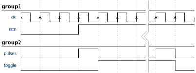
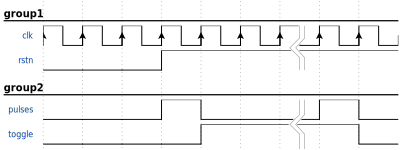

annotations
Undulate supports more evolved annotations than edges. These are
defined in a separated section entitled annotations.
These annotations are like special bricks defined by a property
shape associated to extra parameters dedicated to the given
shape.
Time compression
This one is purely stylistic, and consists in global time
compression. It is a variant of the symbol ‘|’ spanning over
several signals. Its shape is thus ||.
This global time compression requires a x value to place
the annotation at the desired instant.
{
signal: [
{
name: "pulses",
wave: "lhl...hl.",
node: ".a....b.."
},
{
name: "toggle",
wave: "l.h....l.",
node: "..c....d."
}
],
annotations: [
{
shape: "||",
x: 5
}
]
}

pulses:
wave: "lhl...hl."
node: ".a....b.."
toggle:
wave: "l.h....l."
node: "..c....d."
annotations:
- shape: "||"
x: 5

pulses.wave = "lhl...hl."
pulses.node = ".a....b.."
toggle.wave = "l.h....l."
toggle.node = "..c....d."
[[annotations]]
shape = "||"
x = 5
Tip
The global time compression annotation is by default drawn
over the complete image. However, this annotation accepts two
other properties: from and to.
These limit to which waveforms are concerned by the time compression.
For instance one can split the time compression to change the look and feel of the following image
into the following
from and to accept either a floating point number as an index of
a signal waveform or a percentage in the format number % where the number
is a floating point number between 0.0 and 100.0.
Horizontal Line
{
signal: [
{
name: "pulses",
wave: "lhl...hl.",
node: ".a....b.."
},
{
name: "toggle",
wave: "l.h....l.",
node: "..c....d."
}
],
annotations: [
{
shape: "-",
y: 0.5
}
]
}

pulses:
wave: "lhl...hl."
node: ".a....b.."
toggle:
wave: "l.h....l."
node: "..c....d."
annotations:
- shape: "-"
y: 0.5

pulses.wave = "lhl...hl."
pulses.node = ".a....b.."
toggle.wave = "l.h....l."
toggle.node = "..c....d."
[[annotations]]
shape = "-"
y = 0.5

Tip
The horizontal line annotation is by default drawn
over the complete image. However, this annotation accepts two
other properties: from and to.
These limit to which bricks are concerned by the horizontal line.
from and to accept either a floating point number as an index of
a signal brick or a percentage in the format number % where the number
is a floating point number between 0.0 and 100.0.
Vertical Line
{
signal: [
{
name: "pulses",
wave: "lhl...hl.",
node: ".a....b.."
},
{
name: "toggle",
wave: "l.h....l.",
node: "..c....d."
}
],
annotations: [
{
shape: "|",
x: 7.5
}
]
}

pulses:
wave: "lhl...hl."
node: ".a....b.."
toggle:
wave: "l.h....l."
node: "..c....d."
annotations:
- shape: "|"
y: 7.5

pulses.wave = "lhl...hl."
pulses.node = ".a....b.."
toggle.wave = "l.h....l."
toggle.node = "..c....d."
[[annotations]]
shape = "|"
y = 7.5

Tip
The vertical line annotation is by default drawn
over the complete image. However, this annotation accepts two
other properties: from and to.
These limit to which waveforms are concerned by the vertical line.
from and to accept either a floating point number as an index of
a signal waveform or a percentage in the format number % where the number
is a floating point number between 0.0 and 100.0.
Arrows
This annotation is the equivalent of Wavedrom’s edges.
To represent an edge NODE PATTERN NODE [TEXT]
the annotation object is represented as follows:
annotations: [
{
shape: ``PATTERN``
from: ``NODE``
to: ``NODE``
text: ``TEXT``
}
]
annotations:
- shape: ``PATTERN``
from: ``NODE``
to: ``NODE``
text: ``TEXT``
[[annotations]]
shape = ``PATTERN``
from = ``NODE``
to = ``NODE``
text = ``TEXT``
Tip
It is possible to adjust the position of a text with the properties
dx and dy.
They accept a floating point value.
Tip
from and to accept either one of the following format:
(x, y)
(x %, y %)
node name
node name + (dx, dy)
Where x, y, dx and dy are floating point numbers.
In case of a percentage notation, it is a floating point number between
0.0 and 100.0.
Text
It is also possible to draw only a textual annotation. This annotation object
expect a text and a position. The position is provided by a x and a y
coordinate. Thus, it can be used as follows:
annotations: [
{
text: "There is no transition between these data",
fill: "rgba(255, 255, 0, 255)",
x: 8,
y: 4.15
}
]
annotations:
- text: There is no transition between these data
fill: rgba(255, 255, 0, 255)
x: 8
y: 4.15
[[annotations]]
text = There is no transition between these data
fill = rgba(255, 255, 0, 255)
x = 8
y = 4.15
Stylish annotation
Fill and Strokes
It is possible to change the color of a line by specifying the property
stroke.For example on the vertical line
jsonml yaml tomlannotations: [ { shape: "|", x: 1, stroke: "rgb(10, 200, 240)" } ]annotations: - shape: "|" x: 1 stroke: "rgb(10, 200, 240)"[[annotations]] shape = "|" x = 1 stroke = "rgb(10, 200, 240)"It is also possible to change the color of filled arrow by specifying the property
fill.For example on an arrow
jsonml yaml tomlannotations: [ { shape: "#~>", from: "a", to: "b", fill: "#FFA500", stroke: "#FFA500" } ]annotations: - shape: "#~>" from: a to: b fill: "#FFA500" stroke: "#FFA500"[[annotations]] shape = "#~>" from = a to = b fill = "#FFA500" stroke = "#FFA500"The property
fillandstrokeare part of the css for SVG images.However, gradient and named colors are not supported by all rendering engines. Gradient are not supported. Named color is only supported by
undulate -f svg
Dashes
It is possible to make the line using dashes rather than begin solid.
jsonml yaml tomlannotations: [ { shape: "|", x: "1", stroke-dasharray: [1, 3] } ]annotations: - shape: "|" x: 1 stroke-dasharray: [1, 3][[annotations]] shape = "|" x = 1 stroke-dasharray = [1, 3]The property
stroke-dasharrayis part of the css for SVG images.
Text background
By default, to enhance the visibility, textual annotations (even in arrows)
are drawn on top of a white area as a background.
However, this can hide some key element of your drawing. Thus the background
can be removed by setting the property text_background to False in
the annotation.